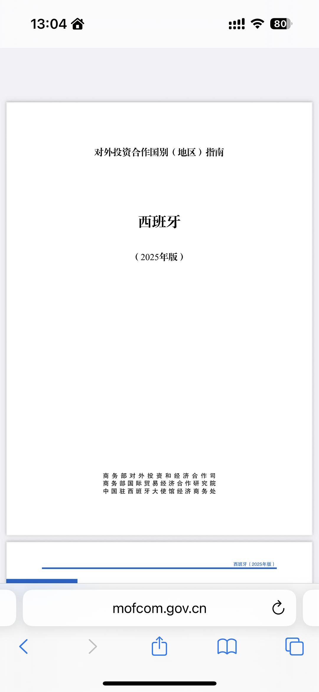
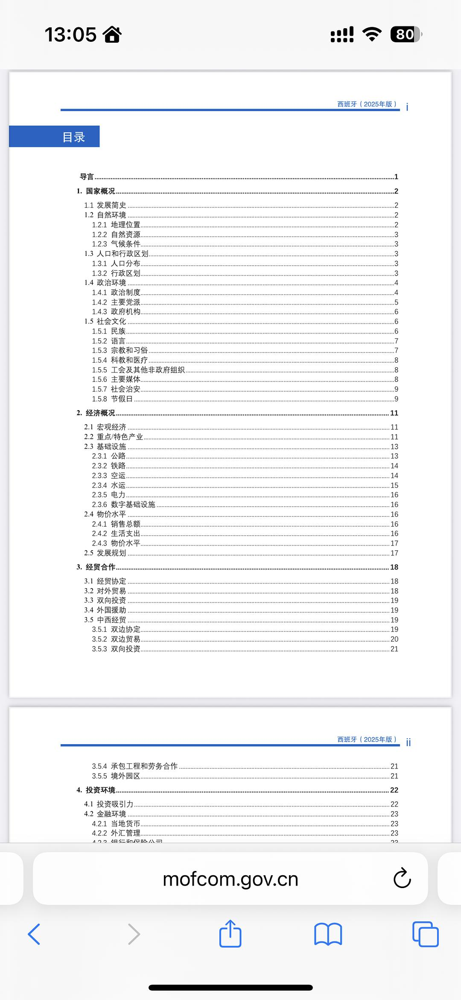
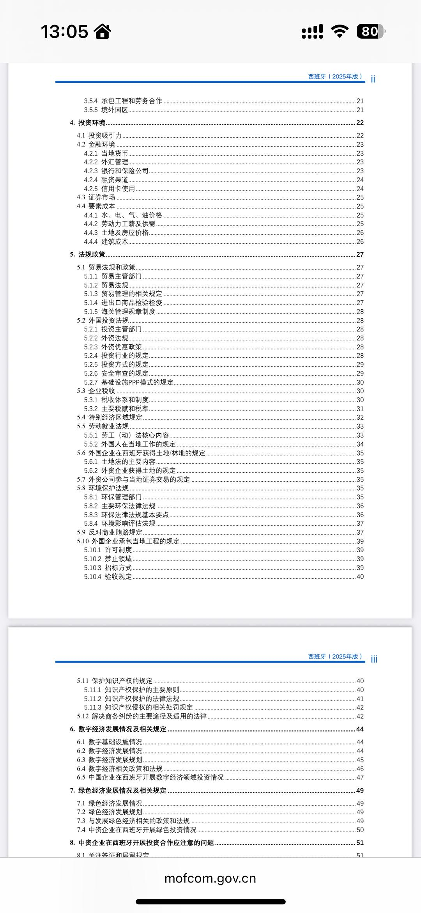
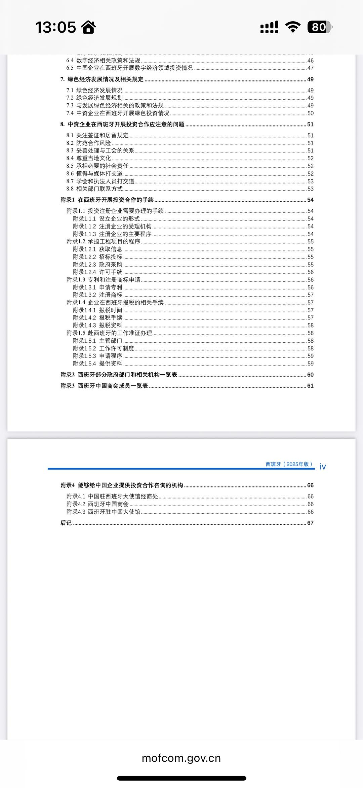

2026年10月
广播发布后不可编辑，所以每条都是那一刻的原话。
2026-10-07 22:43:02
 看过 无职转生Ⅲ 到了异世界就拿出真本事 / 無職転生Ⅲ ～異世界行ったら本気だす～ ★★★★☆
看过 无职转生Ⅲ 到了异世界就拿出真本事 / 無職転生Ⅲ ～異世界行ったら本気だす～ ★★★★☆
质感又回s1了，开心。但每每想到 Eris 苦练时鲁迪正左手右手一个白妈妈一个蓝妈妈亲热真真没绷住。ep3厚涂风的ed很喜欢。ep5看到鲁迪炸鱼又没绷住，3p会不会有点太开放了？ep8的回忆刻画很不错哦。ep11开头梦的作画很不错。ep12好精彩，三句话仿佛规则怪谈了。ep13讲得还真满。完结了 Eris 依旧还是在路上。ed很不错。
2026-10-07 18:52:26
收藏评论到豆列 理解 从镜头语言角度，拆解为什么《阿嬷的情书》是一部烂片
2026-10-07 17:55:29
在听 ロンググッドバイ ★★★★☆
《海と花束》的MV拍得好棒。也喜欢第三轨。
2026-10-07 15:52:33
 看过 生化危机：爆发夜 / Resident Evil ★★★★☆
看过 生化危机：爆发夜 / Resident Evil ★★★★☆
jumpscare太多，根本防不住，因此后半程放松身心地被吓了。几个场面制景很不错，真真有临场感，切换得也不突兀。喜欢男主吐槽役的身份，一路吐槽一路笑，另外对女友的暗戏挺满意的，至少写完整了。结局太悲伤，所有人都没错，但所有人都有罪。
2026-10-06 20:44:21
收藏小组讨论到豆列 理解
最近在学习小组里看到不少小伙伴在问，想了解某个国家的历史人文、风俗习惯、做生意要注意什么，但网上信息太杂，不知道该信哪个。今天给大家安利一个我挖到的宝藏——商务部发布的《对外投资合作国别（地区）指南》2025年版，完全免费，官方出品，信息权威，关键是真的好用！ 🔍 这到底是什么？…
（豆瓣在这里截断了，全文不在档案里）
   


2026-10-06 18:18:48
看过 神探之痕迹 ★★★☆☆
张译还是《三大队》的出装，看得有些腻了。故事编排上很是生硬，看点只在于首案里的场景还原以及比较《杀人回忆》的追捕场景，二案的“真假父子笑话”与当时的乱状，三案的半遮面的同性恋情以及马舞王与高叶姐的年迈妆。诚哥追忆了一番当演员的时候，犹有《春风》之意；当导演不青涩了，但平庸。摄影是一点都不关注呼吸效应的影响么。